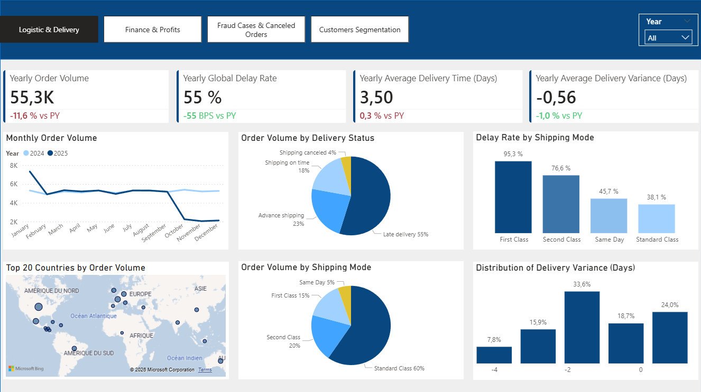

Visualisations de données
Voici les résultats clés de l'analyse :

Note: This project utilizes a synthetic dataset for demonstration purposes and does not represent real-world business performance.
Aperçus rapides
File Links
You can download an open the Dashboard here.
Power Bi